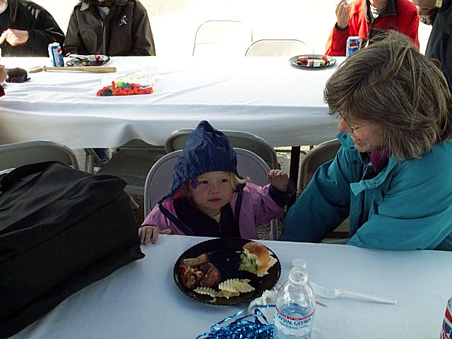
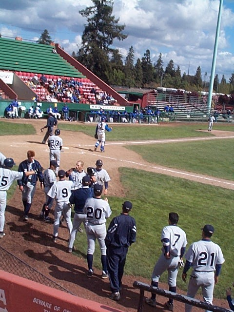
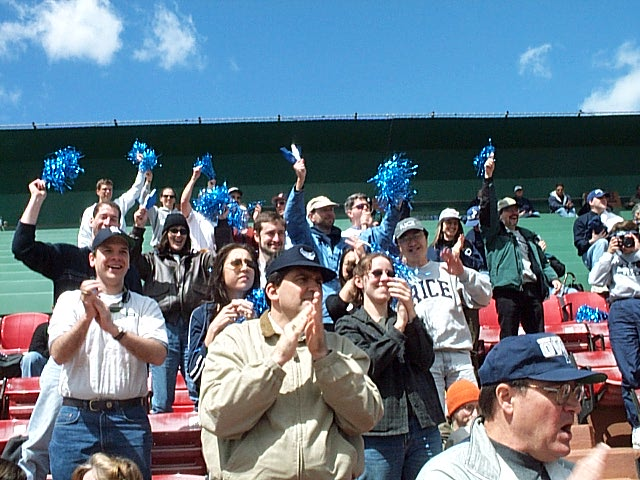

|
San Francisco Bay Area Rice Alumni Group |
|
|
News
|
RiceOwls
Baseball
Date & Time Saturday, April 7, 2001 @ 1:00 PM
Location San Jose Municipal Stadium, Alma and Senter Road
Leader Kevin Gass @ kmgass@bigfoot.com or tel.415.440.3111
A large crowd turned out in support of the first-place RiceOwls for their three game series against the Spartans in San Jose. Alumni of all ages were out to root for the home team. To get alumni into the mood, pre-game festivities include a Texas Style BBQ. Alumni cheered on the Owls who, unfortunately, lost the first two games by 5-7 and 5-7. With some timely hitting and solid pitching, the Owls avoided the sweep by taking the third game with the score of 10-1.
   |